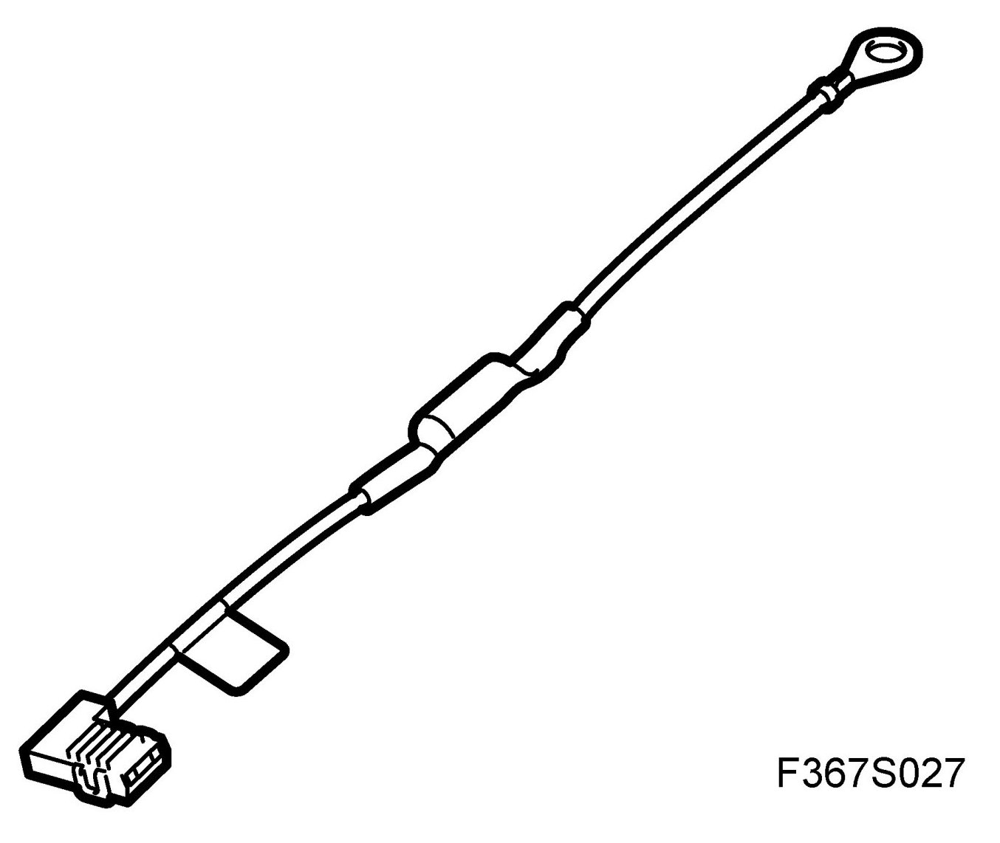
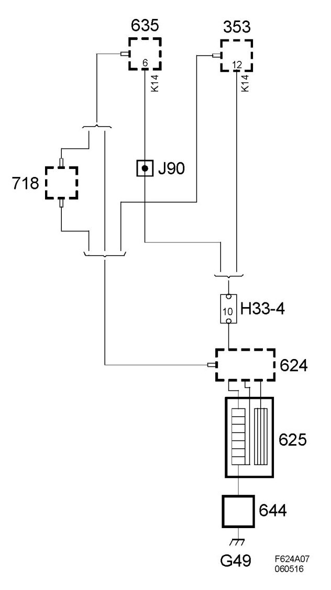

Radio/Stereo Noise Filter: Description and Operation
Filter, Antenna Ground (644), 4D
Location
Filter, antenna ground (644)

Main purpose
The antenna filter grounds the electrical heating coil and isolates the antenna signal from ground in order to avoid picking up interference signals.
Type
Coil type antenna filter which isolates in one direction.
Connection
Connected between the rear window heating and ground.
